A–D are direction studies for the user to choose. This page is not an approval record. Nothing here changes production art, gameplay, hitboxes, manifest, or packed atlas.
Reading the images: A and D use the approved reference cells. B and C are generated concepts shown on a 256px transparent canvas for comparison; their crop is normalized to the study's calculated visible height, not independently verified pixel density. They are not sprite-ready. B/C mockups below are mechanical nearest-neighbour compressions of the packed leg-to-sole band, not redrawn anatomy. D uses A pixels and a written posture direction.
A/D and the other fighters use approved 256px cells. B/C concept renders are placed on 256px cells, scaled to the target visible height; this is a layout normalization only and does not verify their pixel density or exact anatomy.
A · current
Naruto
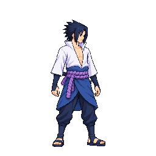
Sasuke
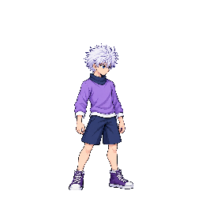
KilluaGojo A
Neutral leg: 106±5px · Body height: 215px · Leg share: 49.3%±2pp Neutral visible: 236px incl. hair Combat chord: 112±14px · 52%±7pp of neutral body; low-confidence pose chord only
B · shorter legs
NarutoSasukeKillua
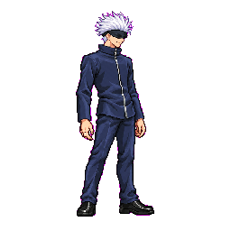
Gojo B
Design target leg: 97.5±5px · Target body height: 206.5px · Target leg share: 47.2% Target visible: 228px incl. hair · legs −8%. Achieved proportions unverified.
C · shorter + sturdier
NarutoSasukeKillua
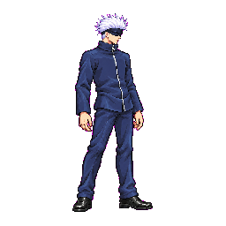
Gojo C v02
Design target leg: 95.4±5px · Target body height: 204.4px · Target leg share: 46.7% Target visible: 225px incl. hair · legs −10%, fuller jacket/trousers. Achieved proportions unverified.
D · same anatomy, posture
NarutoSasukeKilluaGojo D neutral=A
Neutral leg: 106±5px · Body height: 215px · Leg share: 49.3%±2pp Combat chord: 112±14px · 52%±7pp of neutral body; low-confidence pose chord only Direction: low, wider base, more knee bend; avoid straight-legged hit poses.
Generated model directions
B and C cells are concept images from independent calls, shown on a 512px transparent canvas. D combat is a lower/wider combat-pose concept; A combat remains the approved cell. Exact attempt paths and hashes are recorded in the branch's art/characters/gojo/production/proportions/GENERATION_LOG.md. These images are not equal-density pixel art and are not approval-ready production art. Astra visual study found C neutral v02's head visibly smaller than A/B relative to its torso and legs; that comparison is unresolved because the final C neutral call was rejected by tool validation before generation. C is held as a concept only.
A · approved baseline
B · neutral / combat
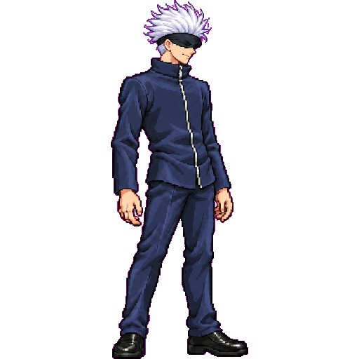
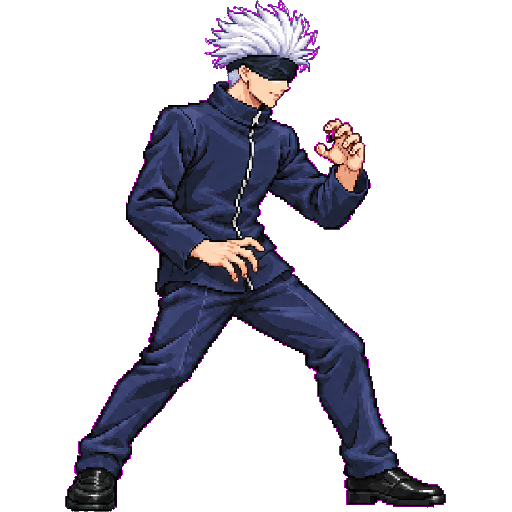
C · neutral v02 / combat
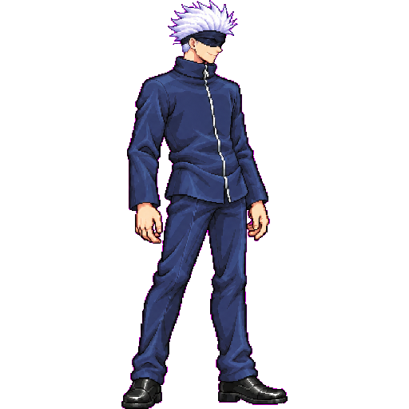
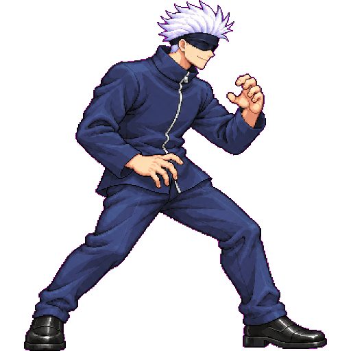
D · A neutral / combat direction
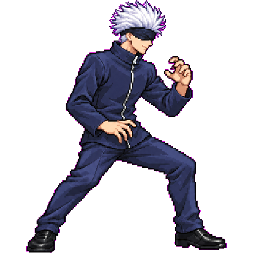
Mockups in packed frames
Each column shows idle f0 and hurtHigh f0 from the current quantized atlas, using direct current sheet slots (0 and 93). The archived art/characters/gojo/frames/ PNGs are stale: all 33 requested frame files differ from their current atlas crops, so they were excluded. B/C mockups shorten the hip-to-sole band by nearest-neighbour resampling, shift the connected upper body down by the corresponding amount, and pin soles to y=241. The shoes are mechanically resampled too; these crude mockups communicate a length change and do not model a finished redraw. D keeps the pixels and adds the posture direction.
A · current
idle f0
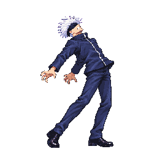
hurtHigh f0
B · leg band −8%
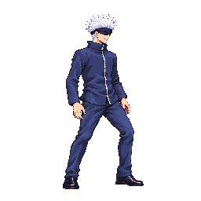
idle f0
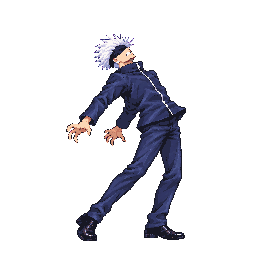
hurtHigh f0
C · leg band −10%
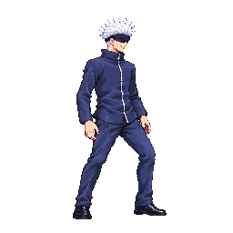
idle f0
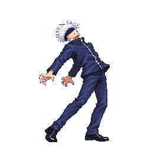
hurtHigh f0
D · posture-only direction
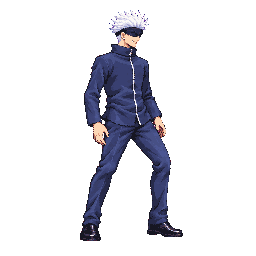
idle f0 unchangedhurtHigh f0 unchanged
Pose note: bend knees more and widen the base in hit/reaction drawings. These unchanged cells are shown to make clear that D does not alter the model.
Diagnosis and possible production cost
Current source-level reference hashes: approved neutral D9FD4DCA67C7CC133E897773A3C8128D6C5320A42402642C11409FEA770175A0, approved combat AB42BC6FACD14659BF35B48A4BCE8682CD17218F200D1E7FCDC6430F58451656. Packed atlas hashes: sheet.png CE87CC8D31F6CA7336BE020F477A178BC909A4804BD16002D7A70B96F9DE7EF7, anims.json 0134EC68B48889310BD6FE85711C4FFE1126D120751FAD9F96AEB4E9EADACB6C. See the source-version SHA-256 and frame-to-slot table in the branch diagnosis. Open current packed atlas · Open atlas slot metadata.
The approved Gojo neutral has an estimated 106±5px hip/belt-to-sole segment within a 215px standing body (49.3%). The other title-style neutrals have 195px Naruto, 197px Sasuke, and 176px Killua bodies; they are different stature baselines, not a shared-height target. Gojo's dark uninterrupted trouser line reads long beside Naruto's trouser breaks, Sasuke's sash/hakama, and Killua's exposed knees. Current packed cells show no confirmed leg-length drift beyond the approved Gojo cells within measurement uncertainty. The detailed frame values and uncertainty are in the branch's DIAGNOSIS.md.
Option
Model scope
Possible strip work
Production effort boundary
A · keep current
No model change.
No proportion redraw indicated by this study. If pose readability alone is selected, limit review to identified reaction poses.
0 proportion-driven strips; any separate pose-only work is scoped after user direction.
B · −8% leg length
Changes the model; standing body target ≈206.5px.
Reassemble and measure all 42 Gojo strips in size-r6's active inventory plus its 2 explicit exclusions, dash and superDash (44 total inventory boundary). Existing poses may be reusable; redraw only where the new segment ratio cannot be retained.
0–44 redraws is a planning range, not an estimate of generation calls. Minimum requires reviewing/possibly reassembling every affected strip; no-call reuse must still pass scale and anatomy checks.
C · −10% and sturdier
Changes legs, jacket breadth and trouser width; standing body target ≈204.4px.
Same 44-strip inventory boundary, with additional outfit-volume consistency checks. Each candidate strip may be reused if it already matches the selected build; otherwise redraw.
0–44 redraws plus body/outfit audit; actual scope depends on comparison of each existing strip to the user-selected model.
D · same anatomy, posture
Keeps approved A model and neutral cell.
Pose-only pass on reaction set: hurtHigh, hurtLow, launched (3 strips). Some frames can be assembled/reused; redraw only where the bent/wider pose cannot be achieved by no-call assembly.
0–3 redraws, with three strips reviewed; no model-wide proportion migration.
“No-call assembly” means rearranging/reusing approved existing source frames without image generation. Counts are inventory/review boundaries, not a promise that every strip must be redrawn. The size-r6 review lists additional box/shape leads but does not prove leg-length drift; its 42-strip scope overlaps this hypothetical model audit.
Decision requested: choose A, B, C, or D, or give a different direction. Choosing a study is not approval of any generated cell or strip; Claude will prepare a separate production plan and obtain the required image approvals before shipping.